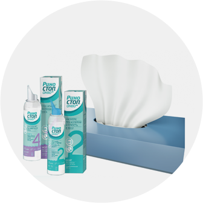
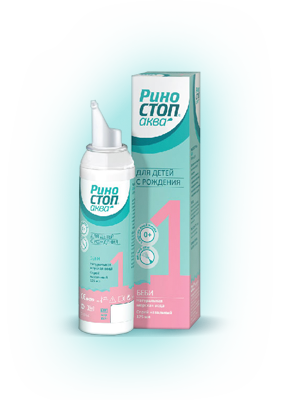
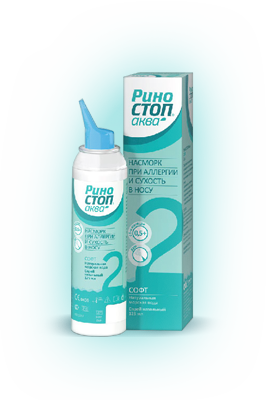
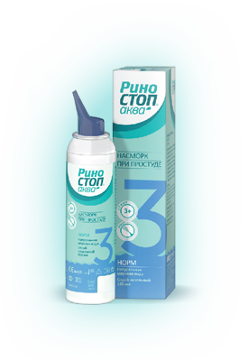
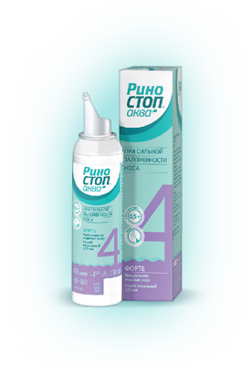
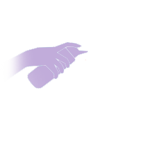

Уход за полостью носа
Уход за полостью носа
Важность личной гигиены ни у кого не вызывает сомнений. Водные процедуры помогают очистить тело и повысить жизненный тонус. Таким образом, ежедневная гигиена является отличной профилактикой многих инфекционных заболеваний. То же самое касается и носа человека. Его очищение играет важную роль в защите от вирусов и бактерий.
Польза гигиены полости носа
Нос выполняет важные для человека функции: дыхательную, обонятельную, защитную и резонаторную. Через носовые ходы поступают тысячи литров воздуха, который идет дальше в дыхательную систему уже в обработанном виде. В полости носа воздух очищается от патогенной микрофлоры и согревается. Из-за различных заболеваний и под действием внешних негативных факторов слизистая оболочка носа не может работать в бесперебойном режиме. В этом случае частички пыли, аллергены и микробы не выводятся должным образом из носовых ходов. Вот почему гигиена полости носа очень важна. Она является отличным методом профилактики респираторных заболеваний и аллергических реакций.

Возможные противопоказания
В некоторых случаях такая гигиена носовой полости имеет противопоказания.
К ним относятся:
- Отек тканей носа, который не удается снять;
- Опухолевые образования в полости носа;
- Искривление носовой перегородки;
- Предрасположенность к носовым кровотечениям;
- Воспаление среднего уха;
- Перфорация барабанной перепонки;
- Аллергические реакции на раствор для промывания.
Очищение носа с помощью РИНОСТОП® АКВА
Самостоятельное приготовление раствора для промывания носа не всегда является рациональным и безопасным решением. Если у человека нет достаточных знаний и опыта в этом вопросе, то есть большая вероятность навредить своему организму. Сегодня разработано множество специальных средств для гигиены полости носа. К ним относится спрей РИНОСТОП® АКВА. Он применяется как в профилактических целях (2 раза в день), так и в рамках комплексного лечения острых и хронических заболеваний носа, носовых пазух и носоглотки (4–6 раз в день).
Продукция РИНОСТОП® АКВА является изделием медицинского назначения

РИНОСТОП® АКВА БЕБИ
может использоваться уже с рождения

РИНОСТОП® АКВА СОФТ
подходит для детей с 6 месяцев и для взрослых

РИНОСТОП® АКВА НОРМ
обеспечивает уход за полостью носа в профилактических целях и применяется для комплексного лечения инфекционных заболеваний у детей от 3 лет и взрослых **в составе комплексной терапии

РИНОСТОП® АКВА ФОРТЕ
подходит для детей с 6 месяцев и для взрослых**в составе комплексной терапии
КАК ИСПОЛЬЗОВАТЬ СПРЕЙ РИНОСТОП®аква форе:
ДЕТЯМ СТАРШЕ 2-х ЛЕТ И ВЗРОСЛЫМ
ДЕТЯМДО 2-х ЛЕТорошение производить в положении ребенка лежа на боку
1.Высморкаться, чтобы очистить полость носа от слизи перед использованием РИНОСТОП® АКВА
2.снять прозрачный защитный колпачок с баллончика
3.Наклониться вперед над раковиной и повернуть голову вбок. Аккуратно ввести наконечник насадки распылителя в носовой ход, находящийся сверху.Нажать на распылитель и производить введение раствора в течении нескольких секунд

4.Наклонить голову в противоположную сторону и провести процедуру с другим носовым ходом.
5.Высморкаться, используя правильную технику: слегка приоткрыв рот, зажимая по очереди одну ноздрю, с небольшим усилием продувать вторую.
6.Хорошо промыть насадку-распылитель теплой водой и вытереть насухо
1.очистить носовые ходы ребенка перед использованием РИНОСТОП® АКВА БЕБИ
2.снять прозрачный защитный колпачок с баллончика повернуть ребенка на бок, аккуратно ввести наконечник насадки распылителя в носовой ход, находящийся сверху, нажать на распылитель и вводить раствор в течение нескольких секунд.
3.повернуть ребенка на другой бок и провести процедуру с другим носовым ходом
4.вернуть ребенка в вертикальное положение, позволяя раствору оказать действие в течение нескольких секунд, затем очистить полость носа аспиратором
5.детям до 2-х лет сморкаться не рекомендуется из-за риска развития отита, вытереть остатки
6.после каждого использования хорошо промывать носовую насадку-распылитель горячей водой и вытирать насухо